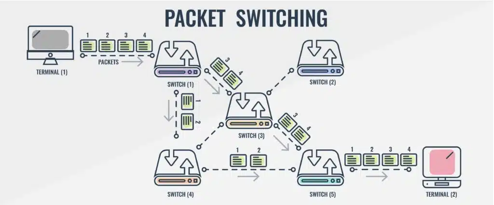
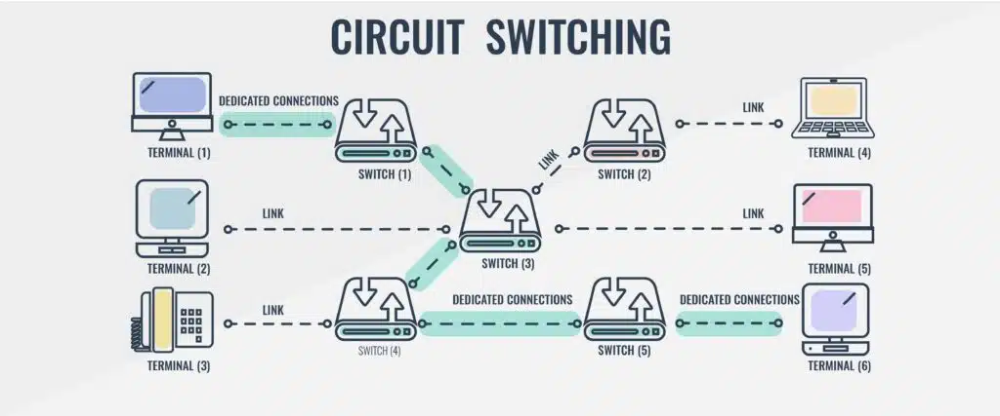

In the realm of telecommunications, the mechanisms governing data transmission play a critical role in determining efficiency, reliability, and cost-effectiveness. Two fundamental approaches, packet switching, and circuit switching, stand out for their distinct operational principles and applications. This report aims to elucidate the variances between packet switching and circuit switching, exploring their functionalities, advantages, and limitations.
Packet switching is a data transmission technique that involves breaking user information into discrete data envelopes called packets. Each packet includes its own appended control information for routing, sequencing, and error checking. This approach allows a communications channel to be shared by multiple users, with each user utilizing the circuit only for the duration required to transmit a single packet.
Packet switching is more efficient than circuit switching as packets can find their own data paths to their destination without the need for a dedicated channel. It is also reliable, as data packets can be resent if they don't reach their destination, reducing packet loss. Additionally, packet switching reduces costs by allowing general network traffic and voice traffic to be transferred across the network without the need for a dedicated channel.
The biggest limitation of packet switching is its unsuitability for applications requiring minimal latency. In networks with many voice calls, circuit switching is necessary for high-quality end calls. Packet switching may result in choppy audio, making it difficult for users to understand each other.
Circuit switching is a communication method where a dedicated communication path, or circuit, is established between two devices before data transmission begins. This dedicated circuit remains reserved exclusively for the duration of the session, ensuring a continuous and reliable connection. Commonly used in voice communication and some types of data communication, circuit switching provides a physical path between the source and destination, unlike packet switching, where data packets travel independently through dynamic routes.
Circuit switching has become popular due to its ability to minimize delay for users before and during a call, ensuring a consistent user experience. It provides consistent bandwidth, channels, and data rates, allowing users to stay connected for longer periods without performance issues.
While circuit switching is ideal for voice communications, it is not suitable for other types of connections due to its inefficiency in resource utilization. Dedication of one channel to a single service makes it unavailable for other services, leading to higher costs.
Circuit switching is referred to as the technology of data transfer that utilizes sending messages from one point to another. This involves sending messages from the receiver to the sender and back simultaneously. A physical connection gets established during this process along with the receiver; a dedicated circuit is always present to handle data transmissions, through which data is sent. Packet switching can be used as an alternative to circuit switching. In packet-switched networks, data is sent in discrete units that have variable lengths.
| Circuit Switching | Packet Switching |
|---|---|
| A circuit needs to be established to make sure that data transmission takes place. | Each packet containing the information that needs to be processed goes through the dynamic route. |
| A uniform path is followed throughout the session. | There is no uniform path that is followed end to end through the session. |
| It is ideal for voice communication, while also keeping the delay uniform. | It is used mainly for data transmission as the delay is not uniform. |
| Without a connection, it cannot exist, as the connection needs to be present on a physical layer. | A connection is not necessary, as it can exist without one too. It needs to be present on a network layer. |
| Data to be transmitted is processed at the source itself. | Data is processed and transmitted at the source as well as at each switching station. |
In conclusion, circuit switching and packet switching are two different methods used in communication networks to transfer data between two or more devices. Circuit switching establishes a dedicated communication path before data transmission begins, while packet switching divides the data into smaller units called packets and transmits them over the network. Understanding the differences between the two methods can help you choose the right network technology for your specific needs.